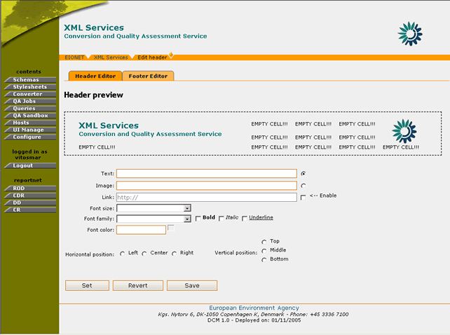
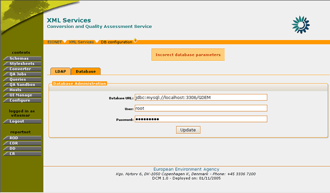

Through the UI management toolkit the administrator has the ability to change some elements of the user interface. These elements are:
The administrator can change the content of these UI elements by adding/removing images, text and/or hyperlinks. The layout and positioning of this content is controlled via a matrix 5x3. This matrix represents the available area for the header/footer. This area is divided in cells and each cell, may be used as a container for the information that the user would like to display.
Figure 11: Footer template matrix
For more details on how to add/edit content in the header/footer, please see section 3.4.2
In order to edit the content of the Header/Footer, the user must be logged in as DCM Administrator.
If the user has administrator privileges, then the following steps must be followed:
STEP 1 – Login
If you are not already logged in, see: Authenticate User Account.
STEP 2 – Click on “UI Manage” button on the navigation bar.
From here you will be able to select which one of the Header/Footer you wish to edit by clicking the appropriate tag buttons.

Figure 12: Header Management page
STEP 3 – Select and Edit Matrix Cell
Once clicked on the desired tab, the Header/Footer preview page will be displayed. This consists of the Preview Matrix, the different types of input fields (plain text, image, hyperlink) and the formatting options.
In order for the user to perform a change on the UI, a matrix cell must be selected. This is done by performing a mouse click on the matrix. The indicated cell will be denoted then with a red rectangle around it.

Figure 13: Matrix cell selection
As soon as this is done, the user may enter the text, image, hyperlink to be added on the header/footer and add any further formatting using the available tools.
In the case of a link, the user has to enter the text to appear on the UI and set the URL by ticking the “Enable” button.
In the case of an image, the user has to select the Image link radio box and either enter the URL of an external image, or select one from the Image Manager functionality.
The Image Manager enables the DCM administrator to add, store, remove images in a container. When the user wants to select a new image to be displayed on the UI, he/she must click on the corresponding image on the Image manager.

Figure 14: Image Manager
If the cell already contains some information, this is going to be displayed in the input fields upon the cell’s selection.
STEP 4 – Preview the New Settings
In order for the user to preview the new settings for the Header/Footer, the “Set” button must be pressed. Instantly, the preview matrix will be updated with the new data.
STEP 5 – Save/Revert new Settings
If the user wishes to bring back the initial settings for the Header/Footer, then the “Revert” button must be selected. This will bring the matrix cells to the state that is saved in the DCM database.
However, if the user is happy with the new Settings and wishes changes to take effect DCM-wide, then the “Save” button must be selected.
*Important Note: After the “Save” button is selected, the saved matrix state in the database is overwritten. Selecting the “Revert” action will bring the Header/Footer matrix back to this saved state.
In summary:
Step |
Header/Footer Edit |
1 |
Login |
2 |
Click on “UI Manage” button |
3 |
Select and Edit Matrix Cell |
4 |
Preview the New Settings |
5 |
Save/Revert New Settings |
In order to edit the Database parameters, you must be logged in as DCM Administrator.
If you have administrator privileges, then the following steps must be followed:
STEP 1 – Login
If you are not already logged in, see Authenticate User Account.
STEP 2 – Click on “Configure” button on the navigation bar.
In order to edit the database options, the “Database” tag must be selected.

Figure 15: Database Administration page
STEP 3 – Edit values for DCM Database
The user can edit any of the database connection parameters. Changing these parameters will affect the information the DCM application accesses.
STEP 4 – Update Configuration
In order for any changes to take effect the user must select the “Update” button. If the operation is successful, the appropriate information message will be displayed. However, if any of the new settings are not valid (wrong address of database/port, wrong username/password) the application will not allow the configuration update and will return the appropriate error message.

Figure 16: Error message while saving invalid database connection settings
In summary:
Step |
Edit Database Parameters |
1 |
Login |
2 |
Click on “Configure” button |
3 |
Edit values for DCM Database |
4 |
Update Configuration |
In order to edit the LDAP parameters, you must be logged in as DCM Administrator.
If you have administrator privileges, then the following steps must be followed:
STEP 1 – Login
If you are not already logged in, see Authenticate User Account.
STEP 2 – Click on “Configure” button on the navigation bar.
In order to edit the LDAP options, the “LDAP” tag must be selected.

Figure 17: LDAP Settings
STEP 3 – Edit values for LDAP server
The user can define the following variables:
- LDAP URL. The address of the server running the LDAP service
- LDAP Context. The DN for the branch of the LDAP database that contains group records
- LDAP User Dir. The directory of the branch of the LDAP database that contains user records.
- LDAP Attribute UID. The LDAP record attribute used as the user ID
Changing the LDAP server will affect the DCM user authentication.
STEP 4 – Update Configuration
In order for any changes to take effect the user must select the “Apply Changes” button. If the operation is successful, the appropriate information message will be displayed. The DCM will perform a validation of the newly inserted values. If the new configuration does not correspond to a valid LDAP server the application will not allow the update and will return the appropriate error message.

Figure 18: Error message while saving invalid LDAP settings
In summary:
Step |
Edit LDAP Parameters |
1 |
Login |
2 |
Click on “Configure” button |
3 |
Edit values for LDAP Servers |
4 |
Update Configuration |